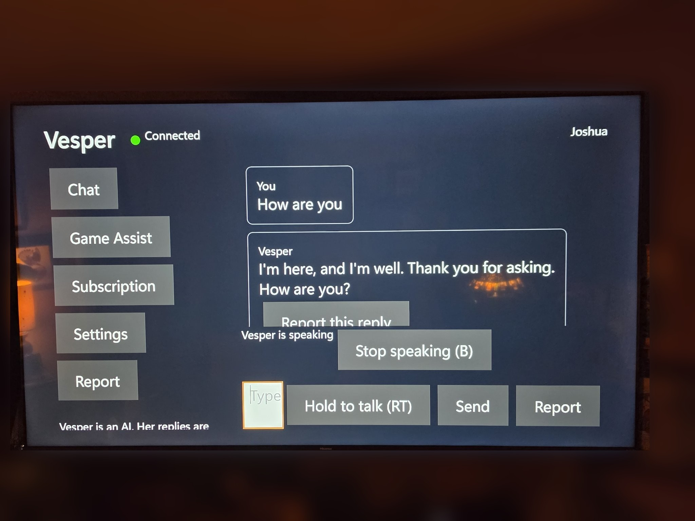

This is a behind-the-scenes look at testing, not the finished product. Tonight our AI game companion Vesper ran on an Xbox Series X for the first time. She installed, signed in, and answered out loud in a real conversation on the TV.

What you see in the photo is a test build. The layout is a testing layout only and is not how she will look at release. The testing now is about how she performs: answering by voice, through a headset, while the game keeps the screen.
More as the testing goes.